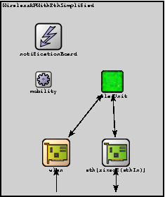
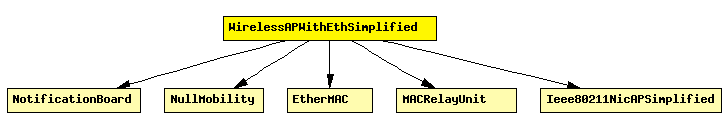

File: Nodes/Wireless/WirelessAPWithEthSimplified.ned
Models a 802.11 Access Point with Ethernet ports, but using a simplified NIC that does not support handovers. It can be used in conjunction with WirelessHostSimplified, or any other host model containing WirelessNicSTASimplified.
See also: WirelessAP, WirelessAPSimplified, WirelessAPWithEth, WirelessAPWithEthSimplified
See also: WirelessHost, WirelessHostSimplified
See also: MobileHost, MFMobileHost
The following diagram shows usage relationships between modules, networks and channels. Unresolved module (and channel) types are missing from the diagram. Click here to see the full picture.
If a module type shows up more than once, that means it has been defined in more than one NED file.
| EtherMAC | Ethernet MAC layer. MAC performs transmission and reception of frames. Doesn't do encapsulation/decapsulation; see EtherLLC and EtherEncap for that. |
| Ieee80211NicAPSimplified | This NIC implements an infrastructure mode 802.11 network interface card for a wireless Access Point (AP), but using a simplified mgmt module that does not support handovers. |
| MACRelayUnit | Prototype for modules providing Ethernet switch functionality. These modules handle the mapping between ports and MAC addresses, and forward frames (EtherFrame) to appropriate ports. |
| NotificationBoard | Using NotificationBoard, modules can now notify each other about "events" such as routing table changes, interface status changes (up/down), interface configuration changes, wireless handovers, changes in the state of the wireless channel, mobile node position changes, etc. |
| NullMobility | This mobility module does nothing; it can be used for stationary nodes. |
| Name | Type | Description |
|---|---|---|
| relayUnitType | string | type of the MACRelayUnit (MACRelayUnitNP, MACRelayUnitPP, etc) |
| Name | Direction | Description |
|---|---|---|
| radioIn | input | |
| ethIn [ ] | input | |
| ethOut [ ] | output |
| Name | Type | Description |
|---|---|---|
| relayUnit.addressTableFile | string | set to empty string if not used |
| relayUnit.addressTableSize | numeric | max size of address table |
| relayUnit.agingTime | numeric | max idle time for address table entries (if expires, entry is removed from the table) |
| wlan.mgmt.frameCapacity | numeric | |
| wlan.mac.address | string | MAC address as hex string (12 hex digits), or "auto". "auto" values will be replaced by a generated MAC address in init stage 0. |
| wlan.mac.maxQueueSize | numeric const | max queue length in frames; only used if queueModule=="" |
| wlan.mac.bitrate | numeric const | |
| wlan.mac.rtsThresholdBytes | numeric const | longer messages will be sent using RTS/CTS; use 2346 for default |
| wlan.mac.retryLimit | numeric const | maximum number of retries per message, -1 means default |
| wlan.mac.cwMinData | numeric const | contention window for normal data frames, -1 means default |
| wlan.mac.cwMinBroadcast | numeric const | contention window for broadcast messages, -1 means default |
| wlan.radio.channelNumber | numeric const | channel identifier |
| wlan.radio.transmitterPower | numeric const | power used for transmission of messages (in mW) |
| wlan.radio.bitrate | numeric const | (in bits/s) |
| wlan.radio.thermalNoise | numeric const | base noise level (dBm) |
| wlan.radio.pathLossAlpha | numeric const | used by the path loss calculation |
| wlan.radio.snirThreshold | numeric const | if signal-noise ratio is below this threshold, frame is considered noise (in dB) |
| wlan.radio.sensitivity | numeric const | received signals with power below sensitivity are ignored |
| eth[*].address | string | MAC address as hex string (12 hex digits), or "auto". "auto" values will be replaced by a generated MAC address in init stage 0. |
| eth[*].txrate | numeric | maximum data rate supported by this station (bit/s); actually chosen speed may be lower due to auto- configuration. 0 means fully auto-configured. |
| eth[*].duplexEnabled | bool | whether duplex mode can be enabled or not; whether MAC will actually use duplex mode depends on the result of the auto-configuration process (duplex is only possible with DTE-to-DTE connection). |
| eth[*].writeScalars | bool | enable/disable recording statistics in omnetpp.sca |
| mobility.x | numeric const | start x coordinate (-1 = display string position, or random if it's missing) |
| mobility.y | numeric const | start y coordinate (-1 = display string position, or random if it's missing) |
module WirelessAPWithEthSimplified parameters: relayUnitType: string; // type of the MACRelayUnit (MACRelayUnitNP, MACRelayUnitPP, etc) gates: in: radioIn; in: ethIn[]; out: ethOut[]; submodules: relayUnit: relayUnitType like MACRelayUnit; gatesizes: lowerLayerIn[sizeof(ethIn)+1], lowerLayerOut[sizeof(ethIn)+1]; display: "i=greenbox;p=169,124"; wlan: Ieee80211NicAPSimplified; display: "p=89,225;q=queue;i=block/ifcard,#ff8000"; eth: EtherMAC[sizeof(ethIn)]; parameters: promiscuous = true, txQueueLimit = 1000, // increase if needed queueModule = ""; display: "i=block/ifcard;p=174,225,row;q=queue"; notificationBoard: NotificationBoard; display: "p=78,60;i=block/control"; mobility: NullMobility; display: "p=71,121;i=block/cogwheel_s"; connections nocheck: radioIn --> wlan.radioIn display "m=s"; wlan.uppergateIn <-- relayUnit.lowerLayerOut[0]; wlan.uppergateOut --> relayUnit.lowerLayerIn[0]; for i=0..sizeof(ethIn)-1 do eth[i].upperLayerIn <-- relayUnit.lowerLayerOut[i+1]; eth[i].upperLayerOut --> relayUnit.lowerLayerIn[i+1]; eth[i].physIn <-- ethIn[i]; eth[i].physOut --> ethOut[i]; endfor; endmodule